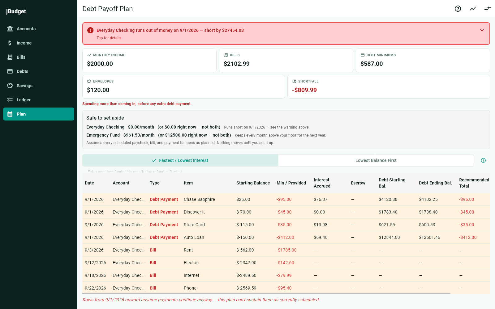

How jBudget works
A closer look at the features that make jBudget different from every other payoff tool.
1. Day-by-Day Cash-Flow Simulation
Unlike calculators that work with averages, jBudget simulates every single day of your financial life. Every paycheck, bill, transfer, and debt payment lands on the actual date it's scheduled. If your account runs dry on a specific date, jBudget tells you exactly when and by how much.
This is the core feature that makes jBudget different: it answers the question no other tool asks: "Can I actually afford this plan given my real accounts and real due dates?"

2. Multiple Payoff Strategies
Avalanche: Pay minimums on everything, send extra to highest-interest debt first. Mathematically optimal, saves the most in total interest.
Snowball: Pay minimums on everything, send extra to smallest balance first. Psychological wins, faster early progress, but higher total interest.
Minimums only: A baseline showing what happens if you just pay minimums and no extra.
jBudget shows all three strategies side by side, so you choose based on which actually works for your cash flow—not on what someone else recommends.
3. Account Activity Table
A month-by-month view of every transaction and running balance across all your accounts. You'll see:
- Every income deposit, on its actual date
- Every bill payment, on its due date
- Every debt payment (minimum + extra), as jBudget calculates it
- Running balance after each transaction
- Any account dips below zero (shortfall dates)
This transparency is why you can trust the plan: you can see the exact dates when money arrives and leaves.

4. Shortfall Detection
If a plan would leave an account negative on any date, jBudget flags it in red. It tells you:
- Which date the account runs short
- How much you'd be short by at the deepest point
- All dips across the entire plan horizon
You then adjust the plan—send less extra to debts, shift money between accounts, or extend the payoff timeline—and see the results immediately.

5. Flexible Recurrence Handling
Real financial life isn't just monthly. jBudget handles:
- Weekly: Paychecks every Friday
- Biweekly: Salary every other Wednesday
- Semi-monthly: Paycheck on the 1st and 15th
- Monthly: Bills on the 1st, 15th, last day of month
- Quarterly: Insurance, property tax, HOA dues
- Annual: Registration, annual fees, tax preparation
- One-off: One-time bills or income
- Custom dates: Explicit list of when something happens
This means jBudget catches seasonal problems that monthly-only tools miss. Insurance in March + property tax in March + car registration in March = a budget crisis jBudget sees coming.
6. Promotional APR Warnings
If a credit card has a 0% APR promotion expiring in 6 months, jBudget warns you when that deadline is coming. If you don't pay off the balance before the promo ends, you owe back-interest on the full amount from day one.
jBudget's plan takes that deadline seriously and warns you, so you're not building a debt payoff strategy that fails the moment the promo ends.
7. Local Encryption, Zero Cloud
Your financial data lives in a database encrypted on your own PC. There's no account to create, no cloud sync, and no bank connection. jBudget makes zero network connections.
You're not giving jBudget permission to access your bank or storing sensitive data on someone else's servers. Just you, your data, and your machine.
8. Confirm Queue for Real-Life Tracking
You set up income and bills with due dates. jBudget projects them forward, but marks them as "unconfirmed" until they actually happen.
When your paycheck lands, you confirm it. When a bill is paid, you confirm it. This tells jBudget what actually happened vs. what was scheduled, so your plan stays accurate as real life diverges from projection.
Past-due items: If a bill is late or an income is delayed, it's flagged in red so you see what's still outstanding—but the plan keeps working.
Bulk confirm: Catching up on a backlog? Confirm several items at once, with a one-tap undo if you made a mistake.
9. Multiple Accounts with Separate Minimums
You might have checking, savings, and a money market account. Each can have its own minimum balance you want to protect (e.g., "never let checking drop below $500").
jBudget tracks them separately and factors those minimums into the plan. You can also exclude an account from planning entirely (e.g., a real emergency fund).
10. Envelopes and Transfers
Envelopes: Set-aside spending buckets for goals (vacation, car repair, Christmas) or tracking (grocery budget, gas budget).
Transfers: Move money between your own accounts. Mark them as fixed (happens every month) or flexible (discretionary spending).
Both integrate into the plan, so you see whether you can actually fund your envelopes while paying down debt.
11. Export & Backup
Export your data anytime: CSV exports for each table (accounts, income, bills, debts, ledger) or a single JSON file for full backup.
Backup your encrypted database for safekeeping. If your machine fails, restore from backup.
You own your data and can move it anytime.
12. One-Time Purchase, No Surprises
Start free with up to 4 debts and 4 goals—enough to try the real simulation. Unlock unlimited debts and goals for a single $0.99 payment. No subscription renewals, no "update your payment method" emails, no ads, and nothing is collected from you.
Use it forever.
$0.99 one-time · fully offline. Ready to see your payoff plan in day-by-day reality?